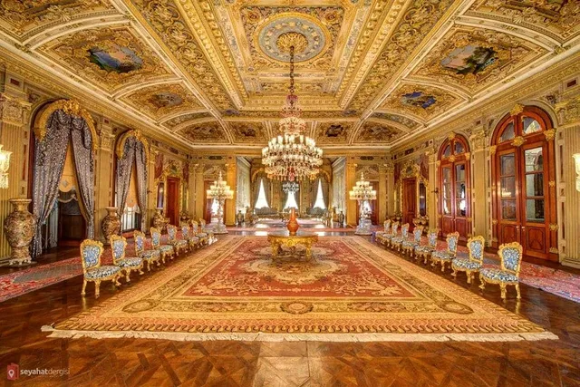
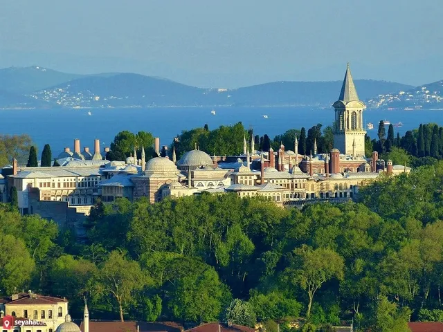
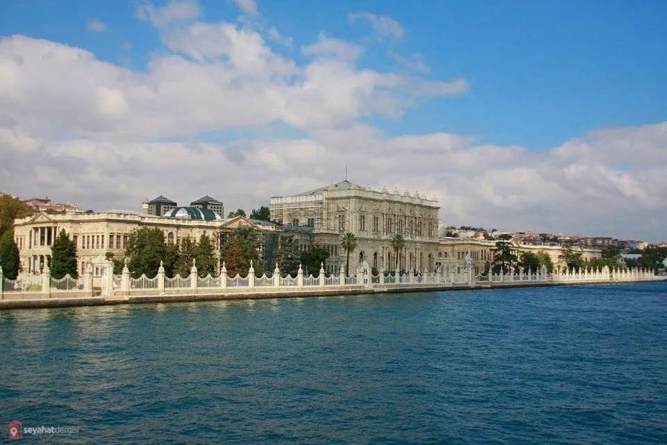
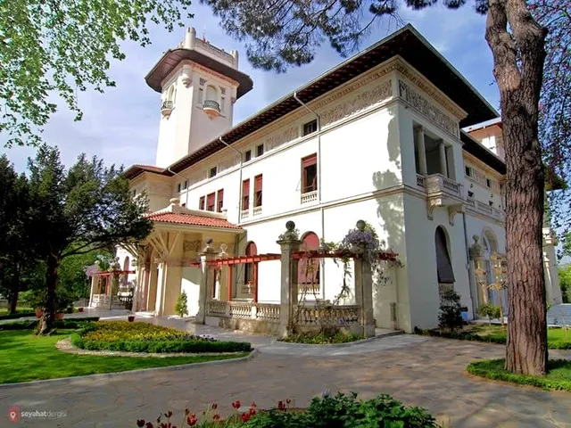
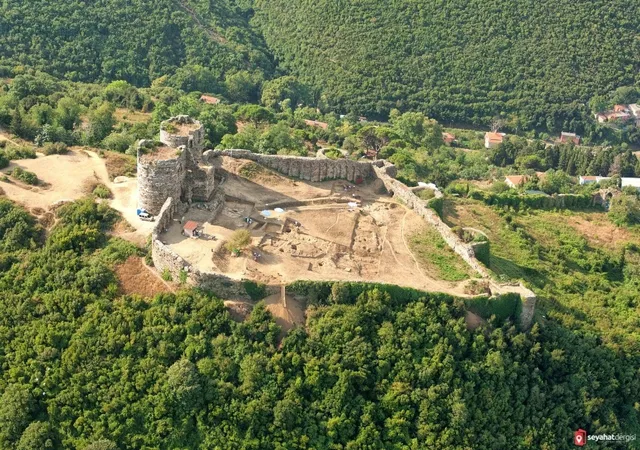

Mirasımız
Yıldız Sarayı
Sarayın bulunduğu alanın tarihi, Kanuni Sultan Süleyman dönemine kadar uzanıyor. Padişahların ilk olarak av sahası olarak kullandığı bölge, daha sonraları buraya yaptırılan kasırlarla birlikte bölgede yerleşik bir düzen alınıyor. Yıldız Sarayı ise III. Selim’in annesi olan Mihrişah Sultan için yaptırılıyor ve yapımı 1807 yılında tamamlanıyor.Yıldız Sarayı’nın tarihimizdeki önemi ise bundan çok daha sonrasına dayanıyor. Osmanlı Padişahları arasında oldukça saygıdeğer bir kişiliğe sahip II. Abdülhamit, Dolmabahçe Sarayı’nın denizden kuşatılma ihtimaline karşı Yıldız Sarayı’nı kullanıyor ve tam 33 sene imparatorluğu buradan idare ediyor.Bir süre Harp Akademileri binası olarak da kullanılan yapının halkın ziyaretine açılması ise 1994 yılından sonrasında ancak mümkün oluyor.
Topkapı Sarayı
Topkapı Sarayı, İstanbul’un fethedilmesinden sonra 1460 yılında yapımına başlanmış ve 1478 yıllında inşaası tamamlanmıştır. Yediyüz bin metrekarelik bir alana sahip Topkapı Sarayı, Fatih Sultan Mehmed ile kullanımına başlanmış olup Sultan Abdülmecid dönemine kadar 400 yıl boyunca Osmanlı İmparatorluğunun yönetildiği yer olmuştur.Daha sonraları 19. yüzyıl da Dolmabahçe Sarayı’na taşınılmasıyla ülkenin idaresi de bu sarayda yapılmıştır.İstanbul’da inşa edilen en popüler tarihi yerlerden biridir. 1460 ve 1478 yılları arasında Fatih Sultan Mehmet tarafından küçük yarımadada bir tepenin üstüne, kuzeyde Haliç’e, güneyde Marmara Denizi’ne, kuzey doğuda Boğaz’a hakim olan Anadolu yakasının da harika manzaralarına sahip olan saray, deniz kıyısına Dolmabahçe Sarayı yapılana kadar, Osmanlı İmparatorluğu‘nun 15. ve 19. yüzyıllar arasındaki siyasi merkeziydi.1453 yılında İstanbul’un fethinden sonra II. Mehmet, eski Bizans kalıntılarının üstüne yani yapının bulunduğu bugünkü yerine sarayını inşa etmeyi emrederken, Beyazıt Meydanı’nda daha küçük bir sarayın yapılması için biraz zaman harcadı. Topkapı sarayına taşındıklarında eski yer “Eski Saray“, Topkapı “Yeni Saray” olarak ifade edilmekteydi. Ancak yerel halk, sarayın dışında sergilenen devasa topların Fetih sırasında kullanılmış olmasından dolayı Topkapı Sarayı olarak adlandırmıştır. Başlangıçta Sarayın yaklaşık 700-800 sakini vardı, ancak yüzyıllar boyunca normal günlerde 5.000, festivallerde ise yaklaşık 10.000‘e yükseldi. Bunların arasında bulunan Yeniçeriler, saraydaki ilk avluda oturan nüfusun en büyük kesimi idi.Saray, dünyanın en büyük saraylarından oldu ve şehir içindeki bir şehir haline geldi. Sarayı çevreleyen duvarlar yaklaşık 5 kilometre uzunluğunda idi. Saray yapıldığı ve ilk dönemlerinde yaklaşık 70.000 m2 alana sahip idi ancak sonrasında yapılan bina ve yapılar nedeniyle şu anda sadece 80.000 m2 alana sahiptir.Cumhuriyetin ilk müzesi olan Topkapı Sarayı 03.04.1924 tarihinde müze haline getirilmiştir.Şuanki hali ile dünyanın en büyük saray müzelerinden biridir.
Dolmabahçe Sarayı
Dolmabahçe Sarayı bulunduğu alan ilk olarak Osmanlı Donanması’nın demirlediği koylardan biriyken, zamanla burada bazı denizcilik şölenleri yapılmaya başlanır. Bataklık haline gelmesi ile birlikte de 1800’lü yıllarda doldurulmaya başlanır ve padişahların dinlenmeleri için kullanılan has bahçelerden birisi olur. Zaman zaman içerisinde farklı bahçe süsleme sanatlarının icra edildiği ve farklı tarzda ufak yapıların inşa edildiği bahçede, bugünkü sarayın inşa edilmeye başlanması ise Sultan I. Abdülmecit dönemine tekabül eder. 1855 yılında yapımı tamamen bitirilen yapı, padişahların ikamet ettiği önemli merkezlerden birisi olur. Cumhuriyet Dönemi’nde de birçok yabancı devlet temsilcisinin ağırlandığı sarayın kalıcı son misafiri ise 10 Kasım 1938’de hayata gözlerini yuman Mustafa Kemal Atatürk olur.
Hidiv Kasrı
Mısır Hidivi (baş vezir) olan Abbas Hilmi Paşa’nın 1907’de Çubuklu sırtlarında inşa ettirdiği yapı, Abbas Hilmi Paşa’nın Mısır’daki görevinden alınması ile birlikte bir süre Abbas Hilmi Paşa ve ailesinin konağı olarak kullanılır Hidiv Kasrı.1930’lu yıllarda Abbas Hilmi Paşa’nın İstanbul’dan ayrılması ile birlikte belediye tarafından satın alınan konak 1982 yılında kadar neredeyse hiç kullanılmamış ve atıl vaziyette bırakılmıştır. 1982 yılında başlayan restorasyon çalışmaları ile birlikte 1984 yılında restoran ve kafe olarak hizmet vermeye başlayan konak, bugün BELTUR tarafından kafe ve restoran olarak işletilmekte, aynı zamanda düğün gibi toplu organizasyonlara da ev sahipliği yapabilmektedir.
Yoros Kalesi
Yoros Kalesi, İstanbul’un Anadolu yakasında yer almaktadır.İstanbul Boğazının karadeniz kısmında bulunan kale, İmros Kalesi ile birlikte boğazların girişinin kontrol edilmesi amacıyla yapılmıştır.Boğazın Karadeniz tarafında yer alan kale, boğaza girişlerin kontrol edilmesi maksadıyla yapılmıştır.Kalenin ismi Anadolukavağı Kalesi veya Ceneviz Kalesi olarakta bilinmektedir.Kalenin isminin “Kutsal Yer” anlamına gelen Hieron kelimesinden geldiği söylenmektedir.İsminin anlamı ile ilgili olarak bir diğer iddia ise Oros yani “Dağ” kelimesinden geldiğide söyleniyor. Kale, Anadolu Kavağı sırtlarında yer almaktadır.Kalenin tarihine bakıldığında her ne kadar Cenevizlilerden kaldığı düşünülsede kulelerden birinde yer alan yazıda Bizanslılar tarafından yapıldığı belirtiliyor.
